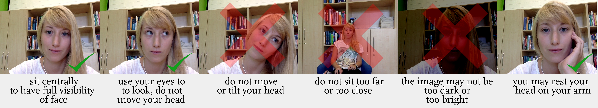

<!DOCTYPE html>
<html>
  <head>
    <!-- Libraries -->
    <script src="js/jspsych-6.2.0/jspsych.js"></script>
    <!-- Plugins -->
    <script src="js/jspsych-6.2.0/plugins/jspsych-html-keyboard-response.js"></script>
    <script src="js/jspsych-6.2.0/plugins/jspsych-fullscreen.js"></script>
    <script src="js/jquery-3.5.0.min.js"></script>
    <script src="js/utilsHelper.js"></script>
    <script src="js/custom_jspsych-plugins/eye-tracking.js"></script>
    <script src="js/custom_jspsych-plugins/two-gamble-choice.js"></script>
    <script src="js/custom_jspsych-plugins/two-gamble-sequence.js"></script>

    <link rel="stylesheet" href="js/jspsych-6.2.0/css/jspsych.css" />
    <link rel="stylesheet" href="js/custom_css/eye-tracking.css" />
  </head>

  <body>
    <script src="js/webgazer/webgazer.js"></script>
    <script>
      const calibrationDuration = 3;
      const validationDuration = 2;

      var timeline = [];

      /** full screen */
      var fullscreenEnter = {
        type: "fullscreen",
        message: `<div>
<h1>Welcome to this study</h1>
<p>Before we begin, please</p>
<ul>
<li style="text-align: left;"><strong>close any unnecessary programs</strong></li>
<li style="text-align: left;"><strong>close any other browser tabs </strong>that could produce<strong> popups </strong>or<strong> alerts</strong></li>
<li style="text-align: left;"><strong>mute </strong>your <strong>cell phone</strong> and make sure that it will not distract you</li>
</ul>
<p>This will help run this study more smoothly.</p>
<p>The study will switch to fullscreen mode when you press the button below. <br />Once this study has started, <strong>please do not exit fullscreen mode</strong>.</p>
                </div>`,
        fullscreen_mode: true,
        button_label: "Switch to fullscreen and continue",
        on_finish: function () {
          document.body.style.cursor = "none";
        },
      };

      var eyeTrackingInstruction1 = {
        type: "html-keyboard-response",
        stimulus: `<div>
                <h1>Eye-tracking</h1>
<p><br>This study uses your webcam to infer your eye-movements.<br>
  Before we begin with the study, we need to turn on and adjust your webcam for eye-tracking.</p>
<p>There are three parts to this process:</p>
<ol>
<li style="text-align: left;"><strong>Camera setup</strong></li>
<li style="text-align: left;"><strong>Calibration</strong></li>
<li style="text-align: left;"><strong>Validation</strong></li>
</ol>
<p>Press the <strong><em>SPACE BAR</em></strong> to proceed start with <em>Step 1: Camera setup</em>.</p>
                </div>`,
        post_trial_gap: 500,
        choices: ["spacebar"],
      };

      //eye tracking parameters
      var calibrationMax = 3;
      var calibrationAttempt = 0;
      var success = false; //update if there's a success
      var eye_calibration_state = {
        doInit: true,
      };

      var init_flag = function () {
        if (calibrationAttempt == 0) {
          return true;
        } else return false;
      };

      var validationTols = [130, 165, 200];
      var validationAccuracies = [0.8, 0.7, 0.6];

      /** first we need a calibration and validation step before entering into the main choice task */
      var eyeTrackingInitialSetup = {
        timeline: [
          {
            type: "eye-tracking",
            doInit: () => init_flag(),
            calibrationPoints: [[50, 50]],
            validationPoints: [[50, 50]],
            doCalibration: true,
            doValidation: true,
            calibrationDuration: calibrationDuration,
            validationDuration: validationDuration,
            showVideoCalibration: false,
            showVideoValidation: false,
            validationTol: validationTols[calibrationAttempt],
            doFaceDetection: true,
            faceDetectionThreshold: 0.7,
            showWebgazerPrediction: true,
            calibrationMessage: `<div>
                <h1>Step 2: Calibration</h1>
                We will now perform the eye tracking calibration.<br>
                During calibration, you will see a series of dots like this <span id="calibration_dot_instruction"></span> on the screen.<br>
                Your task is simply to stare directly at each dot until it disappears.<br>
                Then, quickly move your eyes to the next dot and repeat.<br>
                <br><br>
                Press <b>SPACE BAR</b> to start.
                </div>`,
            showCalibrationMessage: true,
            showValidationMessage: true,
            validationMessage: `<div>
                <h1>Step 3: Validation</h1>
                Now, we need to validate the calibration. Again, please stare at each dot until it turns <b><font color='green'>green</font></b> and disappears.<br>
                A dot may turn <b><font color='yellow'>yellow</font></b>, indicating that you don't seem to be staring directly at it.<br>
                Try to prevent this from happening!
                <br><br>
                Press <b>SPACE BAR</b> to start.
                </div>`,
            faceDetectionMessage: `<h1>Step 1: Camera setup</h1>
                <p>To start, you need to position your head so that the webcam has a good view of your eyes.</p>
                <p>Use the video in the upper-left corner as a guide. Center your face in the box.</p>
                <p>The goal is to align the green face-mask with your face, <b>especially your eyes</b> like this:</p>
                
                <p>Use these tips to achieve a good quality fit:<p>
                
                <p>Try to change the lighting if you cannot achieve a good quality fit.</p>
                <p>Sometimes, slowly moving your head to "slide into" the mask can also improve the fit.</p>
                <p>Once you reached the necessary quality as indicated by the meter below, press the <b>SPACE BAR</b> to continue</p>`,
            on_finish: function (data) {
              console.log(
                "Hit ratio check failed?",
                JSON.parse(data.validationPoints)[0].hitRatio == null
              );
              console.log(
                "Hit ratio:",
                JSON.parse(data.validationPoints)[0].hitRatio
              );
              if (JSON.parse(data.validationPoints)[0].hitRatio == null) {
                jsPsych.endExperiment(
                  `<h1>Apologies</h1>
                    The webcam calibration has failed. We can't proceed with the study.<br>
                    You will be compensated for trying to participate.
                    `
                );
              } else {
                calibrationAttempt++;
                console.log("Accuracy was", data.accuracy);
                if (
                  data.accuracy >= validationAccuracies[calibrationAttempt - 1]
                ) {
                  success = true;
                } else {
                  console.log("Starting another calibration attempt.");
                }
                if (!success && calibrationAttempt == calibrationMax) {
                  jsPsych.endExperiment(
                    `<h1>Apologies</h1>
                    The webcam calibration has failed. We can't proceed with the study.<br>
                    You will be compensated for trying to participate.
                    `
                  );
                }
              }
            },
          },
        ],
        loop_function: () => calibrationAttempt < calibrationMax && !success,
      };

      var freeGambleInstruction = {
        type: "html-keyboard-response",
        on_start: function () {
          webgazer.pause(), webgazer.clearData();
        },
        stimulus: `<div>
                <font size=120%;>Task 1: Gamble choice</font>
                <br><br><br>
                
                <br><br>
                Now on to the main task. In the following you will make repeated choices between two risky gamble lotteries.<br>
                Each lottery represents a possibility to win an amount of money with some probability.
                <br><br>                
                Each lottery's <b>winning probability</b> is represented by a pie chart. The more <b><font color='ForestGreen'>green</font></b> in the pie chart, the higher the probability that the lottery will result in a win.
                <br><br>
                Its <b>winning amount</b> is represented by a bar. The more <b><font color='ForestGreen'>green</font></b> in the bar, the higher the possible winning amount.
                <br><br>
                In each trial, choose between the left and right lotteries, by pressing the <b>F</b> key for the left, or the <b>J</b> for the right lottery. Place your left and right index finger on these keys now.
                <br><br>
                Before each trial, you will see a cross at the middle of the screen. Please try to look at this cross until it disappears.
                <br><br>
                When you are ready, press the <b>SPACE BAR</b> to start.
                </div>`,
        post_trial_gap: 500,
        choices: ["spacebar"],
      };

      var fixation = {
        type: "html-keyboard-response",
        stimulus: '<div style="font-size:60px;">+</div>',
        choices: jsPsych.NO_KEYS,
        trial_duration: 1000,
      };

      freeGambleChoice = {
        type: "two-gamble-choice",
        stimulus: function () {
          stim = {
            p0: jsPsych.randomization.sampleWithoutReplacement(
              [0.6, 0.7, 0.8, 0.9],
              1
            )[0],
            p1: jsPsych.randomization.sampleWithoutReplacement(
              [0.1, 0.2, 0.3, 0.4],
              1
            )[0],
            m0: jsPsych.randomization.sampleWithoutReplacement(
              [0.1, 0.2, 0.3, 0.4],
              1
            )[0],
            m1: jsPsych.randomization.sampleWithoutReplacement(
              [0.6, 0.7, 0.8, 0.9],
              1
            )[0],
          };
          return stim;
        },
        choices: ["F", "J"],
        trial_duration: 10000,
      };

      freeGambleProcedure = {
        timeline: [fixation, freeGambleChoice],
        repetitions: 5,
      };

      // Sequential presentation gamble
      var seqGambleInstruction = {
        type: "html-keyboard-response",
        on_start: function () {
          webgazer.pause(), webgazer.clearData();
        },
        stimulus: `<div>
                <font size=120%;>Task 2: Sequential presentation </font>
                <br><br><br>
                In the next trials, you will make the same choices between two risky gambles.<br>
                The difference is that now the information is shown to you sequentially.<br>
                After the presentation sequence, you will be prompted to make a choice <b>within 1 second</b>!
                <br><br>
                When you are ready, press the <b>SPACE BAR</b> to start.
                </div>`,
        post_trial_gap: 1000,
        choices: ["spacebar"],
      };

      seqGambleChoice = {
        type: "two-gamble-sequence",
        stimulus: function () {
          stim = {
            p0: jsPsych.randomization.sampleWithoutReplacement(
              [0.6, 0.7, 0.8, 0.9],
              1
            )[0],
            p1: jsPsych.randomization.sampleWithoutReplacement(
              [0.1, 0.2, 0.3, 0.4],
              1
            )[0],
            m0: jsPsych.randomization.sampleWithoutReplacement(
              [0.1, 0.2, 0.3, 0.4],
              1
            )[0],
            m1: jsPsych.randomization.sampleWithoutReplacement(
              [0.6, 0.7, 0.8, 0.9],
              1
            )[0],
          };
          return stim;
        },
        sequence: jsPsych.timelineVariable("sequence"),
        choices: ["F", "J"],
        choiceTimeout: 1000,
        doEyeTracking: true,
      };

      var sequence_altwise = {
        durations: [1500, 1000, 1500, 1000],
        alternatives: [0, 1, 0, 1],
        attributes: ["all", "all", "all", "all"],
      };

      var sequence_attwise = {
        durations: [1500, 1000, 1500, 1000],
        alternatives: ["all", "all", "all", "all"],
        attributes: ["p", "m", "p", "m"],
      };

      var sequence_single = {
        durations: [1500, 1000, 1500, 1000],
        alternatives: [0, 1, 1, 0],
        attributes: ["p", "m", "p", "m"],
      };

      timeline_variables = [
        { sequence: sequence_altwise },
        { sequence: sequence_attwise },
        { sequence: sequence_single },
      ];

      seqGambleProcedure = {
        timeline: [fixation, seqGambleChoice],
        timeline_variables: timeline_variables,
        randomize_order: true,
        repetitions: 2,
      };

      images = [
        "img/et-instructions/et-instruct_0.png",
        "img/et-instructions/et-instruct_1.png",
        "img/task-instructions/gamble-instruction.png",
      ];

      jsPsych.init({
        timeline: [
          fullscreenEnter,
          eyeTrackingInstruction1,
          eyeTrackingInitialSetup,
          freeGambleInstruction,
          freeGambleProcedure,
          seqGambleInstruction,
          seqGambleProcedure,
        ],
        preload_images: images,
        on_finish: function () {
          webgazer.end();
          jsPsych.data.displayData("json");
        },
      });
    </script>
  </body>
</html>
